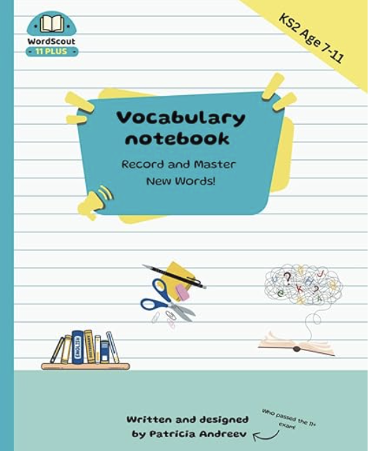
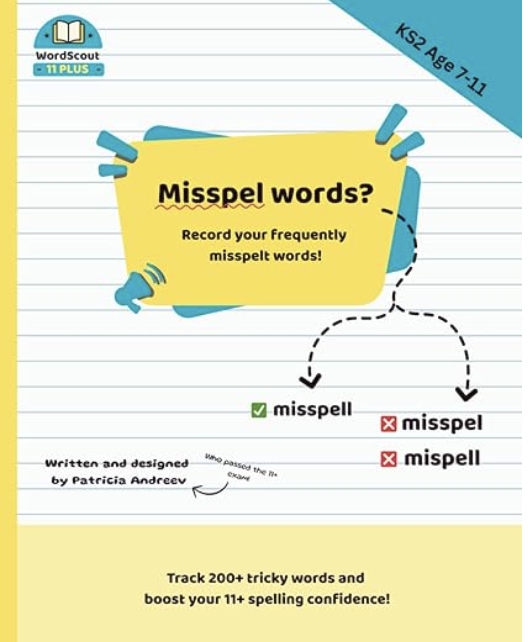

Our publications
Two companion volumes designed to work together. One to build vocabulary, one to practise spelling.

Vocabulary
KS2, Age 7 to 11 — 11+ Vocabulary Notebook
Compact, bright, and built for daily practice. WordScout contains 500+ carefully chosen 11+ words, each with a clear definition and an example sentence showing exactly how to use it in context. The layout is designed for short, focused sessions — 10 to 15 minutes a day is enough to build a strong vocabulary steadily over time.

Spelling
KS2, Age 7 to 11 — 11+ Spelling Notebook
A focused spelling notebook to record frequently misspelled words, track progress, and revisit over time. The act of writing things down reinforces memory far more effectively than reading alone. SpellScout gives children a dedicated place to catch their mistakes and turn them into strengths.